Web Design ● UX/UI ▲ Visual Design ◆ Illustration ■ Brand ● Animation ▲ Product Design ◆ Photography ■Web Design ● UX/UI ▲ Visual Design ◆ Illustration ■ Brand ● Animation ▲ Product Design ◆ Photography ■Web Design ● UX/UI ▲ Visual Design ◆ Illustration ■ Brand ● Animation ▲ Product Design ◆ Photography ■Web Design ● UX/UI ▲ Visual Design ◆ Illustration ■ Brand ● Animation ▲ Product Design ◆ Photography ■
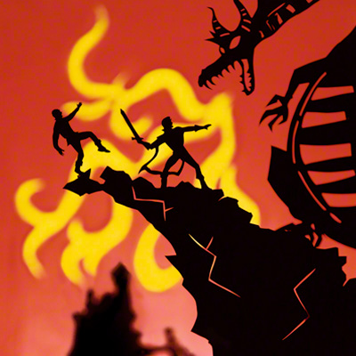
01 · Dragon
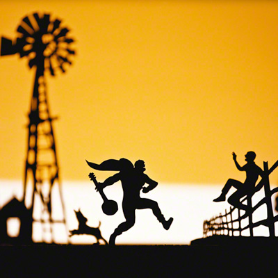
02 · Kansas
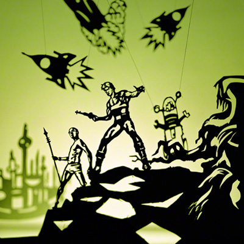
03 · Flash
04 · Batman
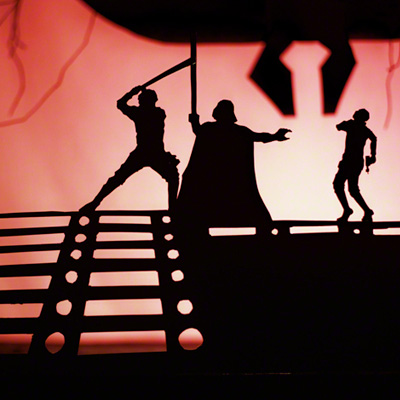
05 · Cloud City
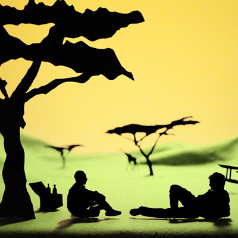
06 · Picnic
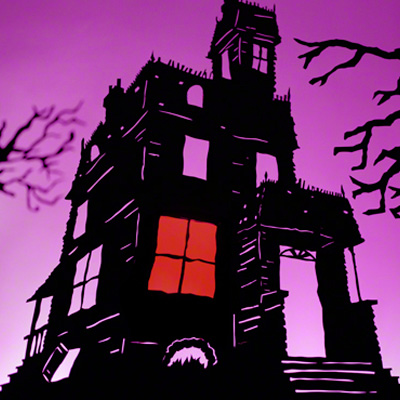
07 · House
08 · Tiptoe
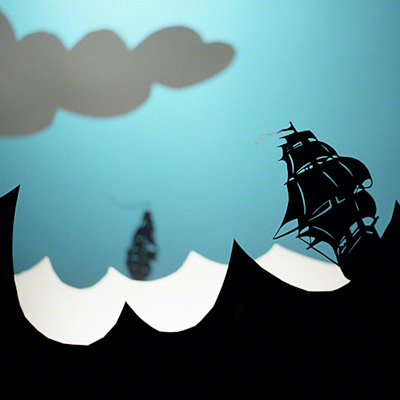
09 · Ship
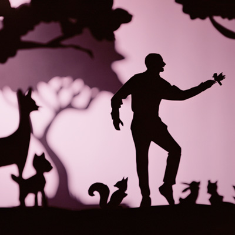
10 · Snow White
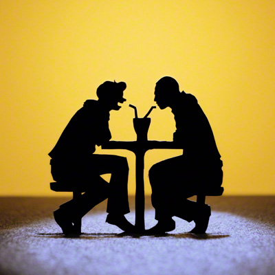
11 · Archie
12 · Bond
13 · Arrival
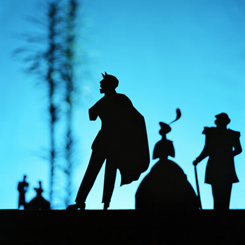
14 · Nobility
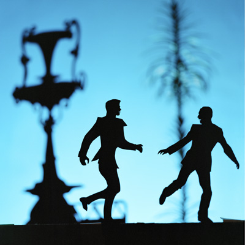
15 · Midnight
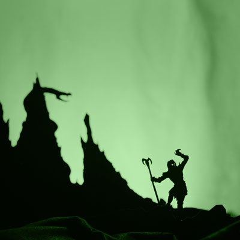
16 · Skeletor
17 · He-Man
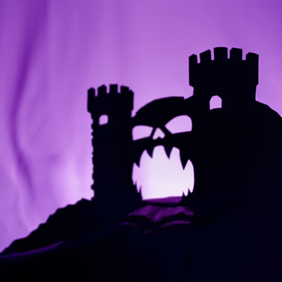
18 · Grayskull
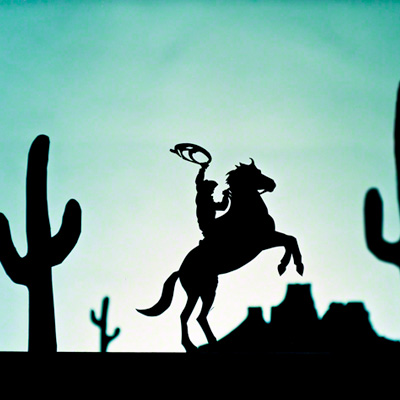
19 · Cowboy
20 · Tatooine
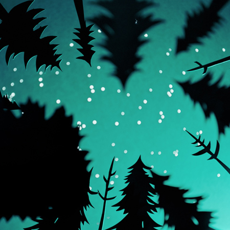
21 · Forest
22 · Campfire
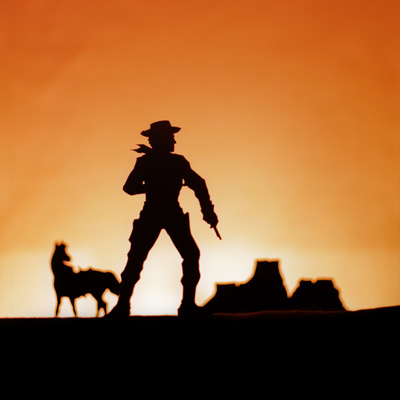
23 · Lone Ranger
24 · Ambush
Back to Photography